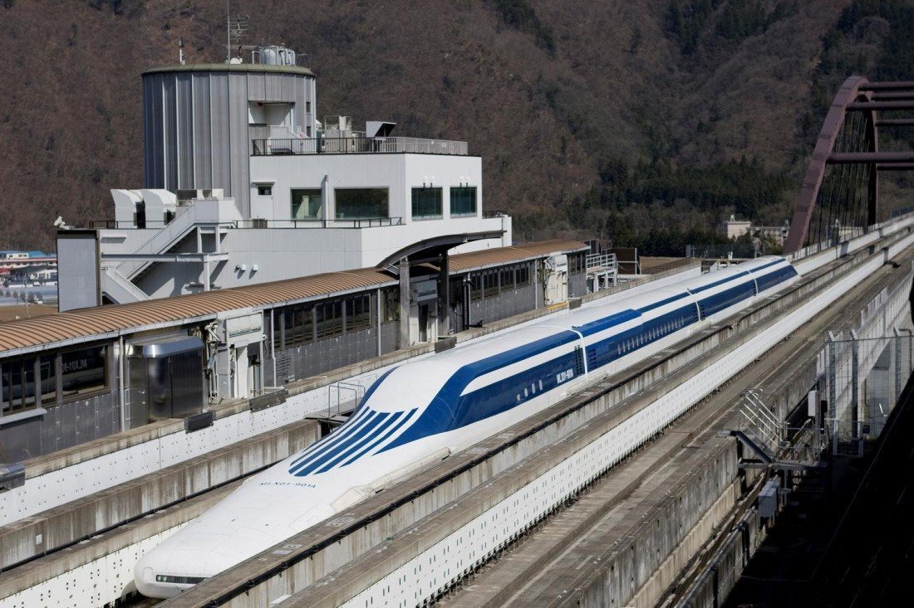
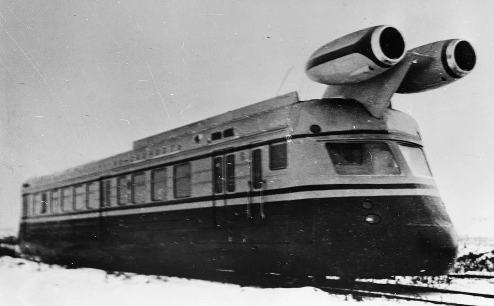
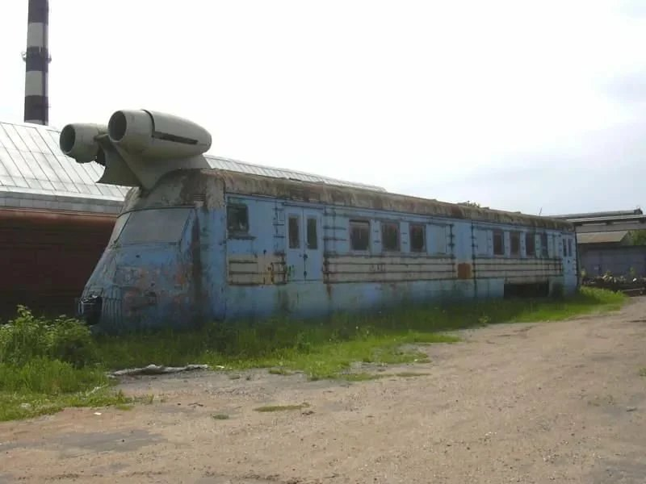

На этом сайте вы сможете найти информацию о некоторых, довольно необычных, поездах. Всё они были действительно придуманы учёными людьми, а не шутникми, и некоторые даже перешли от чертежей к настоящим поездам.
L0 – летающий поезд в Японии Современные поезда вполне могут составить конкуренцию самолетам, особенно, при путешествиях на относительно небольшие расстояния. В качестве примера тому можно привести состав L0, разработанный в Японии, который значительно сократит время поездок по этой стране. Между Японией и Китаем на наших глазах развертывается очередная война. Правда, солдатами в ней выступают не живые люди, убивающие друг друга при помощи оружия, а технологии и инфраструктура. К примеру, поезда, которые в обоих странах становятся все более быстрыми. Китай, к примеру, не так давно представил поезд, максимальная скорость которого достигает 500 километров в час. В ответ на это Япония на днях провела успешные испытания локомотива из серии L0 с таким же скоростным показателем. Правда, о пассажирских перевозках при помощи L0 пока что не идет речи. Данный поезд существует пока что лишь в одном испытательном экземпляре, который в ближайшее время будет и дальше модернизироваться, чтобы стать еще более быстрым и надежным.
Китай, к примеру, не так давно представил поезд, максимальная скорость которого достигает 500 километров в час. В ответ на это Япония на днях провела успешные испытания локомотива из серии L0 с таким же скоростным показателем.
Правда, о пассажирских перевозках при помощи L0 пока что не идет речи. Данный поезд существует пока что лишь в одном испытательном экземпляре, который в ближайшее время будет и дальше модернизироваться, чтобы стать еще более быстрым и надежным.L0 – летающий поезд в Японии
Надо отметить, что L0 – это не обычный поезд, идущий по стандартным железнодорожным рельсам. Это транспортная система класса «маглев», использующая для передвижения магнитную подушку.
Инженеры Советского Союза не перестают удивлять нас и по сегодняшний день, появляются факты или информация о проектах, которые были созданы в годы СССР и они по-настоящему необычны. Во все времена были штатные конструкторы, которые разрабатывали стандартную технику и ничем особым не выделялись. А были те кому поручали самые необычные разработки, которые заставляли поверить в чудо. Таким заданием стало следующие, необходимо было разработать, построить и провести испытания по создания поезда с реактивной тягой. Этим руководство СССР хотело убрать проблему с быстрым перемещением чего-либо на большие расстояния, но по земле.
Инженеры Калининского вагоностроительного завода начали работу, и начали они ее с создания реактивного одного вагона, который взяли из любого электропарка страны. Для того чтобы сделать поезд, для начала нужно провести испытания, как он будет вести себя на обычных рельсах, а для этого достаточно одного вагона. В 1972 году вагон был готов, назвали его - скоростной вагон лаборатория. Перед инженерами стояли две проблемы, первая какой ускоритель поставить на вагон и вторая, как сделать его более обтекаемым, для меньшего сопротивления с воздухом. Обе задачи они выполнили. Были установлены реактивные двигатели от самолета ЯК-40, которые назывались Аи 25.
Чтобы снизить сопротивление вагона, было принято решение установить специальные обтекатели, на носовую его часть и закрыть ими же боковое пространство, где находились колесные тележки, на которых двигался вагон. В результате на испытаниях вагон развил скорость в 187 км/ч, а через год на другой железнодорожной ветке тот же состав разогнался до 250 км/ч. Руководство было довольно работой, все задачи поставленные перед инженерами были выполнены и про проект забыли. Он просто стал не нужен, изобретение оставили гнить где-то под открытым небом завода создателя.
больше информации в источнике Шаропоезд — поезд монорельсовой конструкции, созданный инженером Н. Г. Ярмольчуком в 1932—1934 годах. Поезд двигался на шарообразных колесах с встроенными в них электродвигателями, которые располагались в полукруглых желобах под деревянной платформой (в полномасштабном проекте платформа должна была быть бетонной). Масштабная модель (1/5) поезда, построенная для испытаний концепции этого транспортного средства, развивала скорость до 70 км/ч. Предполагалось, что полномасштабная конструкция будет достигать скорости до 300 км/ч. По всей видимости, в начале 1930-х годов СССР не имел достаточной производственной базы для реализации такого амбициозного проекта. От проекта остались несколько музейных экспонатов и кадры кинохроники той эпохи.
Schienenzeppelin (нем. рельсовый (или железнодорожный) цеппелин) — экспериментальный вагон-автомотриса, который напоминает дирижабль типа цеппелин. Он был разработан и создан немецким инженером-самолётостроителем Францем Крукенбергом в 1929 году. Движение автомотрисы осуществлялось с помощью воздушного винта, расположенного сзади. Был построен только один экземпляр. Автомотриса была двухосной, с колёсной базой 19,6 м. Её общая длина составляла 25,85 метров, высота - 2,8 м. Был установлен 12-цилиндровый бензиновый самолетный двигатель BMW VI мощностью 600 лошадиных сил (450 кВт), который приводил в движение четырёхлопастной (в поздних вариантах двухлопастной) деревянный воздушный винт. 10 мая 1931 года поезд в первый раз превысил скорость 200 км/ч. 21 июня 1931 года поезд установил новый мировой рекорд скорости на железной дороге — 230,2 км/ч по маршруту Гамбург-Берлин, который не был превзойдён любым другим поездом до 1954 года. Среди автомотрис с бензиновым двигателем этот рекорд и по сей день остаётся непревзойдённым. Такая высокая скорость автомотрисы была обусловлена, среди прочего, её малым весом, который составлял только 20,3 тонны, что было достигнуто использованием лёгкой конструкции, заимствованной у дирижаблей (применение алюминиевых шпангоутов, обтянутых парусиной).